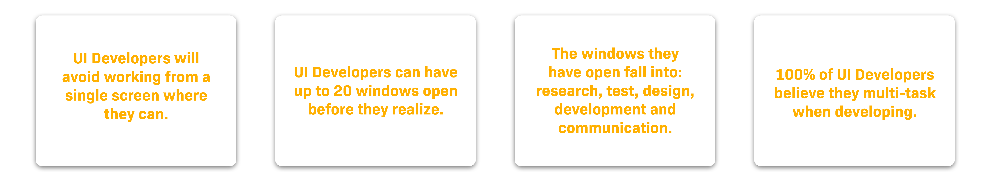

Increasing UX Engineers Efficiency with this Tool
HIVE is a tool for PCs and Laptops that is strictly designed for UX Engineers.
THE PROBLEM
UI Development is inefficient on one screen.
As a UI Developer, everyday I have multiple windows open on my computer while I work.
The monitor I use is my savior as I'm able to have all my main windows open without opening/hiding/closing them.
But what happens when I'm working from home or on the go and I only have my personal laptop, no matter if its the 15 inch model or not?
I use four main windows in a cyclical manner - one for researching, designing, developing and researching.

ANALYZING THE EXPERIENCE
What is out there to help window management?
I use four main windows in a cyclical manner - one for researching, designing, developing and researching.
For example, I will use Sketch to ....
RESEARCH
Conducting User Interviews.
I needed to undertake further research to confirm that I wasn't the only UI Developer experiencing this problem.
My research method consisted of User Interviews and Camera Study: user interviews to see what people did and didn't realize about their process and then camera study to analyze their processes.
I conducted research with eight UI Developers and UX Engineers, who work on my team or work in a similar role outside of the company.
As a few of the participants work remotely, I had them screen record their typical work process from only their laptop for one hour,
as well as answering some of the following questions:
-
Describe the windows they have open when conducting typical UI development work.
-
How often do you work from one screen i.e. laptop?
-
Do you believe that you multitask in your job? Could you describe this process?
-
How many windows would you have open at once when conducting typical work.
-
What techniques do you currently use to have multiple windows open at once on one screen.
I concluded the study by uncovering these user experience pain points:

FURTHER RESEARCH
The UI Developer
I needed to further investigate the last two points as they present the real problem.
100% of UI Developers believe they multi-task. But are they really multitasking or is this an assumption?
And if the windows they have open are categorized by Research, Design, Development, Testing and Communication
then how does their workflow really look?
I went back to the screen recordings for each research participant in order to track their workflow as seen below.
90% of partipants predominately had two windows up at the one time, with a 75% focus on one of them at the one time.
They "multitask" by switching between multiple windows, but they are only focused on the interaction between two screens at once.
For example, they would constantly switch between their local testing environment and their code editor.

USER FLOW
Mapping the User Flow
The diagram below is an example of one of the user flows that I mapped.
-
Development + Design They were developing a component based on the design in Sketch.
They realized that the design doesn't handle the case when the text overflows.
-
Design + Research They went to Google to analyze past developments of this component and to see how they handle overflow.
-
Design + Research + CommunicationThey found a solution and wanted to confirm it with the designer.
-
Design + DevelopmentThey updated the code to match what the designer had communicated to them and updated the design file.
-
Development + Testing They tested their designs in their local host while making adjustments to code.
-
Testing + Design They compared their testing environment with their designs in the Sketch file.
-
Testing + Design + Communication They sent the link to the designer to confirm the updates.

WIREFRAMING
Exploring Multiple Solutions
The actions that UI Developers undertake is clear.
They pivot when shifting quickly from one set of actions to another set of relevant actions.
They add in communication - communication doesnt replace a window.
They spend more time on some actions over others.
The following wireframes explore how users will:
add their windows in the controller
pivot between windows
include communication as an actions
focus on one window over the other in an action.
PROTOTYPE
Rapid Prototype to show Flow